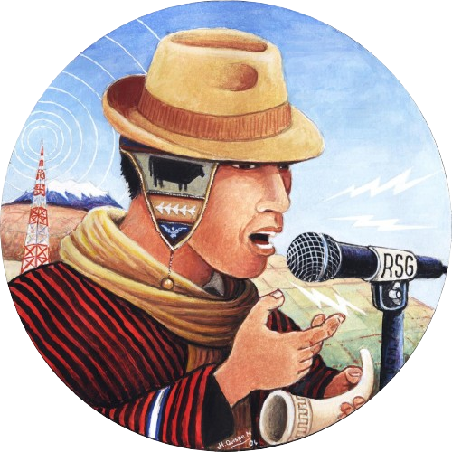

Programación
AM 620
FM 98.2
"La voz del pueblo aymara"
Tarifario Recepción de Partidos Politicos
VOLVER
DETALLE
PRECIO BS
HORARIOS
Lunes a Viernes
Sabados
Domingos
Mañana
Tarde
Mañana
Tarde
Mañana
CAMPAÑAS POLITICAS
50
07:00 a 09:00
17:00 a 18:30
07:00 a 09:00
17:30 a 18:55
07:00 a 08:25